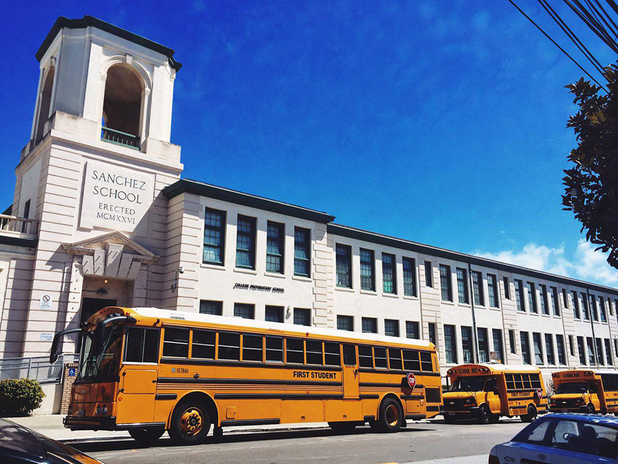
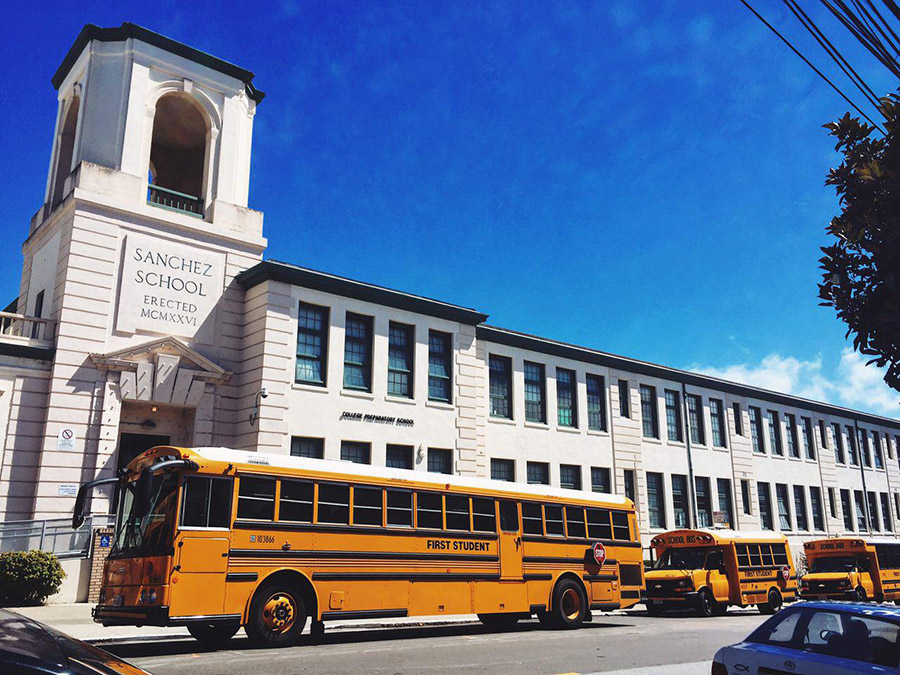

My name is Alena. I am 22. I was born in a small Russian town Kingisepp situated near Saint-Petersburg. Kingisepp is rather typical Russian province. I always knew that I want something more then just sit in a village. So because of that I have chosen one of the best universities in Russia - Saint-Petersburg State University. In that time I was a volunteer in Youth Center of our town and I suppose to be somebody who are connected with social work. So I have chosen Sociology as my future profession. After four years in the end of studying I realized that sociology is not my passion and I don't know whom do I want to be... I was living boring ordinary life, working in a typical place that I didn't really like... But! Lucky for me, something happened in my life - I spent summer after graduation in the USA. It was kind of a push for me. I saw how people enjoy their lives, their jobs, their careers. I realized that I do something wrong. "You also want to enjoy your life" my inside voice said to me "but you can't do it if I don't like what you are doing". I think that our work takes the biggest part of our life time. So I want to enjoy it! My soul was screaming. Finally, now I understand what should I do - I want to be a designer. Actually, it was my dream since my earliest childhood. I knew it but I forgot. My aunt was a designer and I always said "I want to be like my aunt...mmm..." I always forgot this word - designer. For little Alena it was to difficult to remember :)
I can say that I always was a creative person. When I was young I finished Children Art School. To create something is like to breath for me, this is how I spend my free time. I always like to draw, take photos and make something by hands. In the past I was creating design and after that was sewing costumes for cosplay festivals. Also I paint bottles and make a lot of another things: soap, greeting cards, photoalbums, clay toys, collages. Now I am really fond of web design. So, I have little knowledge in different fields but I don't have basics. That is why I want to study and become a professional.

 
